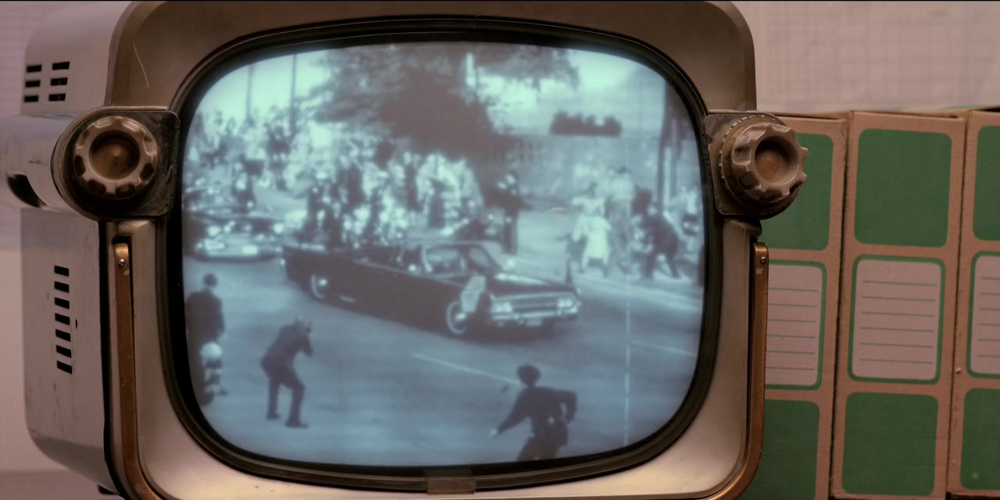
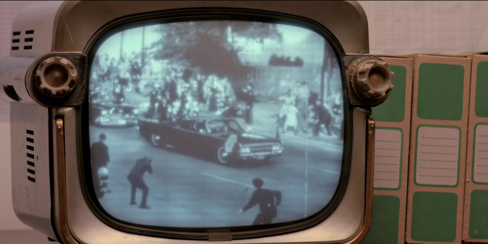

11/22/63
| фантастика, триллер, драма, мелодрама, детектив | |
| 2022 | |
| Темная башня | |
| 16+ | |
| 800 | |
| 11/22/63 |
О чем?
...Убийство президента Кеннеди стало самым трагическим событием американской истории ХХ века.
Тайна его до сих пор не раскрыта.
Но что, если случится чудо? Если появится возможность отправиться в прошлое и предотвратить катастрофу?
Это предстоит выяснить обычному учителю из маленького городка Джейку Эппингу, получившему доступ к временному порталу.
Его цель – спасти Кеннеди.
Но какова будет цена спасения?
Кадры из сериала по этой книге
 

Отзывы
Пользователь: lezvion
Дата: 14 сентября 2013
Оценка: 5++++
Вот уже долгие годы имя Стивена Кинга находится на слуху у всего мира. Множество литературных премий, экранизаций книг и рассказов, тысячи читателей по всему свету. Признаюсь, я давно хотел почитать его произведения, однако из-за большой нелюбви к ужасам все откладывал и откладывал наше знакомство до момента появления его последней книги в жанре фэнтези "11/22/63".
Наши дни, главным героем становится обычный школьный учитель литературы и языка из США по имени Джейк Эппинг добрый умный человек, живущий по принципам и в согласии со своей совестью. У него есть явный талант к своей профессии, а так же дар писателя, однако никаких сверхъестественных способностей не наблюдается. Повествование идет в форме дневника, где все начинается с обычного сочинения, написанного взрослым человеком, который с трудом научился писать из-за детской травмы. События развиваются совершенно непредсказуемо еще несколько страниц назад они праздновали пятерку в фургончике Эла, и вот уже внезапно постаревший и сдавший владелец открывает Джейку свою главную тайну в его кладовке скрыт временной портал в 1958 год.
Читая "11/22/63", начинаешь верить, будто действительно путешествуешь по страницам его дневника. Ощущения захватывают с головой когда Джейк пьет кружку потрясающего холодного Рутбира, то буквально ощущаешь множество колющих пузырьков на языке и насыщенный яблочный вкус; когда он находит свою настоящую машину, начинаешь чувствовать тот же восторг от езды на ней; когда наш герой смотрит школьный спектакль, то разделяешь восторг вместе с ним. Конечно, у каждого свои впечатления и реакции от прочтения, однако у меня они были именно такими.
Восемьсот страниц, но из них нет ни одной лишней, отсутствует ощущение незавершенности или недосказанности. На последней странице охватывают противоречивые эмоции, когда понимаешь, что уже ничего не исправишь. Книга цепляет своей атмосферой, точностью, вниманием к деталям. Каждый персонаж это полностью сформировавшаяся личность со своими страхами, надеждами, мечтами. Кому-то мы сопереживаем, а кого-то просто хочется пристрелить (привет аптекарю).
А теперь представьте на секунду как бы вы поступили на месте Джейка Эппинга, обнаружив портал в другое время? Сможете ли вы пожертвовать своим счастьем ради гражданского долга и блага других? Честно говоря, я бы не смог. Если вы хотите прочесть качественное произведение с легким оттенком фэнтези, то эта книга для вас.
Пользователь: oz7788480
Дата: 20 апреля 2013
Оценка: 5+
Теперь это моя любимая книга Кинга! Упивался каждой страницей. Истинный шедевр написал!
Пользователь: Volodya
Дата: 26 апреля 2013
Оценка: 5+
Похоже надо брать.Старик сейчас чуть ли не бодрее,чем в молодости.
Пользователь: Basile13
Дата: 28 мая 2013
Оценка: 5+
Кинг изменился в последних произведениях и не то, чтобы стал хуже или лучше, скорее просто перешел на другой уровень. Отошел немного от страшилок и стал выдавать добротную фантастику, причем с каждым разом все лучше и лучше. Книга же вышла очень неплохой
Добавить комментарий